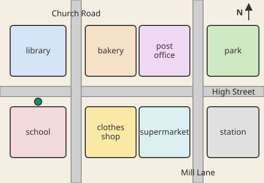

Selbsteinschätzung
Die Selbsteinschätzung braucht JavaScript. Start
Mit dieser Selbsteinschätzung bekommst du mit 30 Aufgaben einen Überblick, was du schon kannst. Sie fragt jede Seite ab.
Die App sagt dir nicht bei jeder Aufgabe, ob sie stimmt. Erst am Ende siehst du für jede abgefragte Seite, ob du sie schon kannst. Was du leer lässt, zählt als nicht gekonnt.
Dein Ergebnis bleibt nur auf diesem Gerät. Ein neuer Start ersetzt es.
Seite 1 von 15
Aufgabe 1
Du stehst vor der school und willst zur station. Du gehst selbst, Norden ist oben auf dem Plan. Schau auf den Plan und wähle das richtige Wort.

Der Plan von Millbrook. Norden ist oben, Osten rechts. Du gehst selbst und schaust in Gehrichtung.
Quelle: eigene Zeichnung. Lizenz: CC-BY-4.0.Aufgabe 2
Seite 2 von 15
Aufgabe 3
Schau auf den Fahrplan und schreibe die Uhrzeit in die Lücke.

Vier Texte von der High Street. Du brauchst nur einen davon.
Quelle: eigene Zeichnung. Lizenz: CC-BY-4.0.Aufgabe 4
Seite 3 von 15
Aufgabe 5
Wähle das richtige Wort für die Frage.
Aufgabe 6
Schau auf die Preisschilder im Laden und antworte auf die Frage.

Preisschilder im Laden.
Quelle: eigene Zeichnung. Lizenz: CC-BY-4.0.
Seite 4 von 15
Aufgabe 7
Aufgabe 8
Schau auf die Karte mit den Buchstaben und wähle das richtige Wort.

Die Britischen Inseln mit Buchstaben (Schemakarte, nicht genau nach Maßstab). Norden ist oben.
Quelle: eigene Zeichnung. Lizenz: CC-BY-4.0.
Seite 5 von 15
Aufgabe 9
Aufgabe 10
Schau auf die Karte von Great Britain und wähle die richtige Richtung.

Great Britain mit drei Gebieten (Schemakarte, nicht genau nach Maßstab). Norden ist oben.
Quelle: eigene Zeichnung. Lizenz: CC-BY-4.0.
Seite 6 von 15
Aufgabe 11
Wähle die richtige Form.
Aufgabe 12
Schreibe den Satz auf Englisch.
Seite 7 von 15
Aufgabe 13
Aufgabe 14
Wähle die richtige Form.
Seite 8 von 15
Aufgabe 15
Auf dieser Karte stehen nur Nummern. Wähle den richtigen Ort.

Schemakarte, nicht genau nach Maßstab. Norden ist oben, Osten rechts.
Quelle: eigene Zeichnung. Lizenz: CC-BY-4.0.Aufgabe 16
Seite 9 von 15
Aufgabe 17
Wähle die richtige Form.
Aufgabe 18
Ergänze die Fragen.
Seite 10 von 15
Aufgabe 19
Wähle das richtige Wort.
Aufgabe 20
Schreibe den Satz auf Englisch.
Seite 11 von 15
Aufgabe 21
Wähle die richtige Form.
Aufgabe 22
Schreibe den Satz auf Englisch.
Seite 12 von 15
Aufgabe 23
Wähle das richtige Wort.
Aufgabe 24
Schreibe den Satz genauer auf Englisch.
Seite 13 von 15
Aufgabe 25
Wähle die richtige Form.
Aufgabe 26
Seite 14 von 15
Aufgabe 27
Wähle die richtige Form. So sagt man ein Jahr oder ein Datum.
Aufgabe 28
Seite 15 von 15
Aufgabe 29
Aufgabe 30
Wähle das richtige Fragewort.
Dein Ergebnis
Mit einem KI-Tutor weiterlernen
Ein KI-Tutor kann mit deinem Ergebnis die Seiten mit dir durchgehen, die noch nicht sitzen. Dein Klick gibt ihm das Ergebnis und deine Eingaben; sonst schickt die App nichts weg.
Du nutzt dein eigenes Konto beim Anbieter. Der Assistent ist kein Angebot von lernapps.net: lernapps liefert nur Inhalte und Aufgaben.